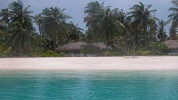
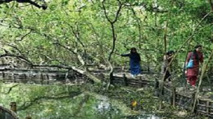

Fort Kochi
This seaside town in the south-western part of main Kochi is popular for its old-world colonial charm, and still showcases every single cultural change it has gone through over the centuries. One can spot remnants of Portuguese and Dutch colonialism in this quaint city which is dotted with similar structures and has an overall ambience that brings to light the colonial powers that once ruled over the place

Willingdon Island
Beautifully housed in the heart of Kochi, the 82-year old Willingdon Island showcases the spectacular prowess and the intellectual level of human mind, and is counted as one of the best places to see in Ernakulam. The archipelago is named after Lord Willingdon, the British Viceroy of India, and is one of the largest human-made islands in India. This beautiful island provides efficient connectivity between Kochi port and other national and international ports, and is home to some of the opulent resorts and commercial and industrial buildings of the district.
